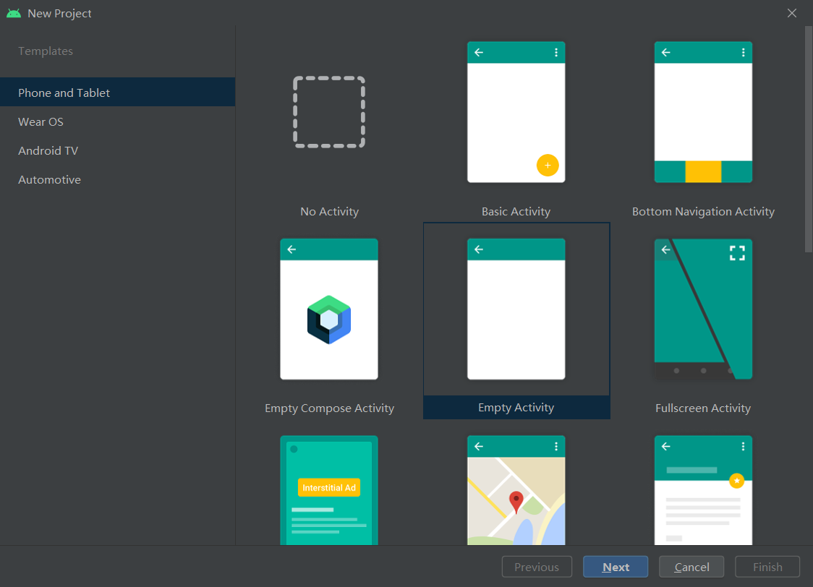
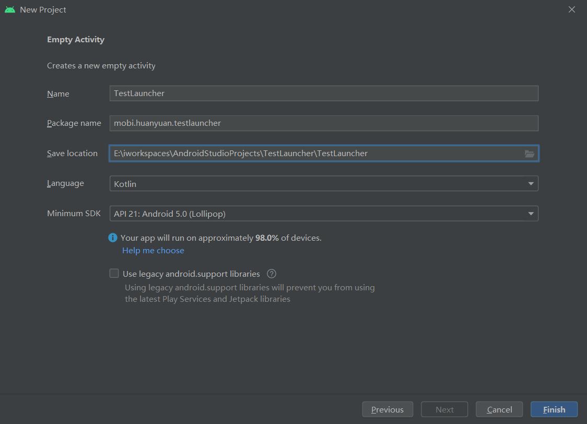
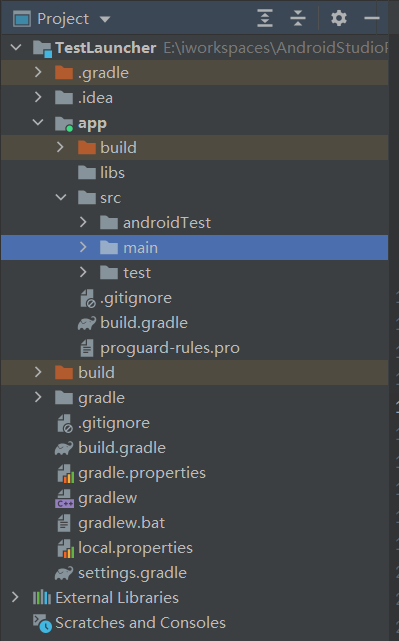
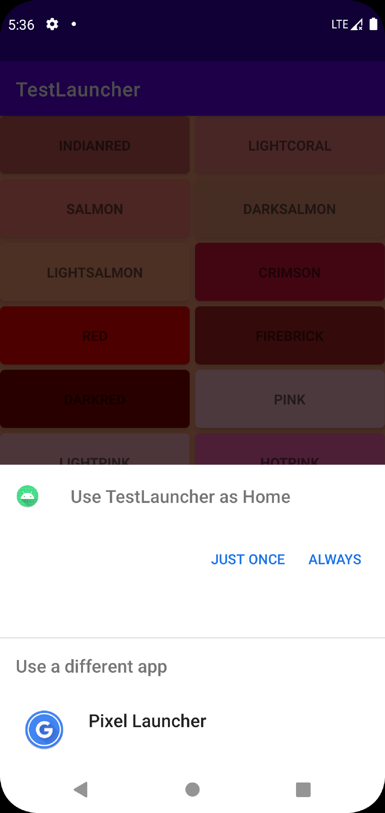

Android系统Launcher上手
By: Jonathan Lai
| 2022-04-20
| android
关于Launcher
Launcher是安卓系统中的桌面启动器，安卓系统的桌面UI统称为Launcher。 Launcher是安卓系统中的主要程序组件之一，安卓系统中如果没有Launcher就无法启动安卓桌面。 那么你如果想要自定义一个安卓桌面，那么就需要修改调整这部分内容。
Launcher上手
下面我就通过一个简单的UI(UI源码）界面来演示怎么自定义Launcher Activity—-自定义桌面。
新建项目
Android Studio新建一个安卓项目。

选择Empty Activity，然后Next。

然后Finish完成项目创建。等初始化完成，项目结构如下：

修改Manifest
在MainActivity的intent-filter标签内添加下边两行代码：
<category android:name="android.intent.category.HOME" />
<category android:name="android.intent.category.DEFAULT" />
修改activity_main.xml
activity_main.xml
<?xml version="1.0" encoding="utf-8"?>
<androidx.constraintlayout.widget.ConstraintLayout
xmlns:android="http://schemas.android.com/apk/res/android"
xmlns:app="http://schemas.android.com/apk/res-auto"
xmlns:tools="http://schemas.android.com/tools"
android:layout_width="match_parent"
android:layout_height="match_parent"
tools:context=".MainActivity">
<GridView
android:layout_width="match_parent"
android:layout_height="match_parent"
android:id="@+id/apps_list"
android:numColumns="4" />
</androidx.constraintlayout.widget.ConstraintLayout>
新建ColorBaseAdapter.kt
package mobi.huanyuan.testlauncher
import android.annotation.SuppressLint
import android.app.Activity
import android.content.Context
import android.graphics.Color
import android.view.LayoutInflater
import android.view.View
import android.view.ViewGroup
import android.widget.BaseAdapter
import android.widget.TextView
import android.widget.Toast
import androidx.cardview.widget.CardView
class ColorBaseAdapter : BaseAdapter (){
private val list = colors()
@SuppressLint("ViewHolder", "InflateParams")
override fun getView(position:Int, convertView: View?, parent: ViewGroup?):View{
// Inflate the custom view
val inflater = parent?.context?.
getSystemService(Context.LAYOUT_INFLATER_SERVICE) as LayoutInflater
val view = inflater.inflate(R.layout.custom_view,null)
// Get the custom view widgets reference
val tv = view.findViewById<TextView>(R.id.tv_name)
val card = view.findViewById<CardView>(R.id.card_view)
// Display color name on text view
tv.text = list[position].first
// Set background color for card view
card.setCardBackgroundColor(list[position].second)
// Set a click listener for card view
card.setOnClickListener{
// Show selected color in a toast message
Toast.makeText(parent.context,
"Clicked : ${list[position].first}",Toast.LENGTH_SHORT).show()
// Get the activity reference from parent
val activity = parent.context as Activity
// Get the activity root view
val viewGroup = activity.findViewById<ViewGroup>(android.R.id.content)
.getChildAt(0)
// Change the root layout background color
viewGroup.setBackgroundColor(list[position].second)
}
// Finally, return the view
return view
}
override fun getItem(position: Int): Any? {
return list[position]
}
override fun getItemId(position: Int): Long {
return position.toLong()
}
override fun getCount(): Int {
return list.size
}
private fun colors():List<Pair<String,Int>>{
return listOf(
Pair("INDIANRED",Color.parseColor("#CD5C5C")),
Pair("LIGHTCORAL",Color.parseColor("#F08080")),
Pair("SALMON",Color.parseColor("#FA8072")),
Pair("DARKSALMON",Color.parseColor("#E9967A")),
Pair("LIGHTSALMON",Color.parseColor("#FFA07A")),
Pair("CRIMSON",Color.parseColor("#DC143C")),
Pair("RED",Color.parseColor("#FF0000")),
Pair("FIREBRICK",Color.parseColor("#B22222")),
Pair("DARKRED",Color.parseColor("#8B0000")),
Pair("PINK",Color.parseColor("#FFC0CB")),
Pair("LIGHTPINK",Color.parseColor("#FFB6C1")),
Pair("HOTPINK",Color.parseColor("#FF69B4")),
Pair("DEEPPINK",Color.parseColor("#FF1493")),
Pair("MEDIUMVIOLETRED",Color.parseColor("#C71585")),
Pair("PALEVIOLETRED",Color.parseColor("#DB7093"))
)
}
}
新建custom_view.xml
<?xml version="1.0" encoding="utf-8"?>
<androidx.cardview.widget.CardView
xmlns:android="http://schemas.android.com/apk/res/android"
xmlns:app="http://schemas.android.com/apk/res-auto"
xmlns:tools="http://schemas.android.com/tools"
android:id="@+id/card_view"
android:layout_width="match_parent"
android:layout_height="wrap_content"
app:cardCornerRadius="5dp"
app:cardElevation="5dp"
app:cardMaxElevation="7dp"
app:contentPadding="20dp"
android:layout_margin="5dp" >
<LinearLayout
android:layout_width="match_parent"
android:layout_height="match_parent"
android:orientation="vertical"
tools:layout_editor_absoluteX="0dp"
tools:layout_editor_absoluteY="0dp">
<TextView
android:id="@+id/tv_name"
android:layout_width="wrap_content"
android:layout_height="wrap_content"
android:textStyle="bold"
android:layout_gravity="center" />
</LinearLayout>
</androidx.cardview.widget.CardView>
修改MainActivity.kt
package mobi.huanyuan.testlauncher
import android.os.Bundle
import android.widget.GridView
import androidx.appcompat.app.AppCompatActivity
import mobi.huanyuan.testlauncher.databinding.ActivityMainBinding
class MainActivity : AppCompatActivity() {
override fun onCreate(savedInstanceState: Bundle?) {
super.onCreate(savedInstanceState)
val binding = ActivityMainBinding.inflate(layoutInflater)
setContentView(binding.root)
// Get an instance of base adapter
val adapter = ColorBaseAdapter()
// Set the grid view adapter
binding.appsList.adapter = adapter
// Configure the grid view
binding.appsList.numColumns = 2
binding.appsList.horizontalSpacing = 15
binding.appsList.verticalSpacing = 15
binding.appsList.stretchMode = GridView.STRETCH_COLUMN_WIDTH
}
}
编译运行
运行结果如下图：

这里因为没有清理掉系统默认的Launcher，所以需要选择下，这里选择我们自定义的 TestLauncher->ALWAYS即可。
注意：如果你想彻底将系统默认Launcher替换成自定义的Launcher，需要下载系统源码，调整并重编译才可以的。